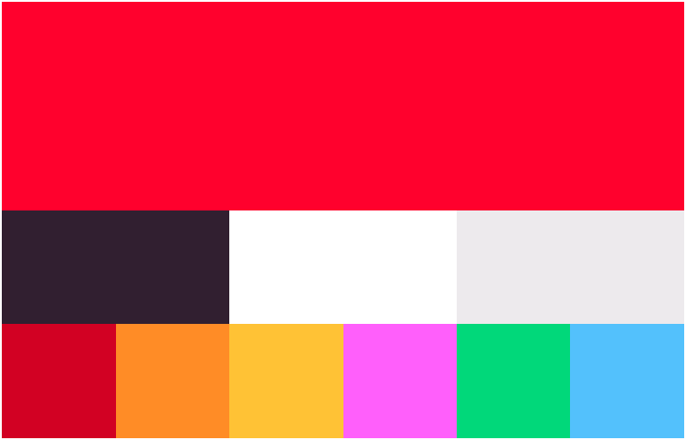
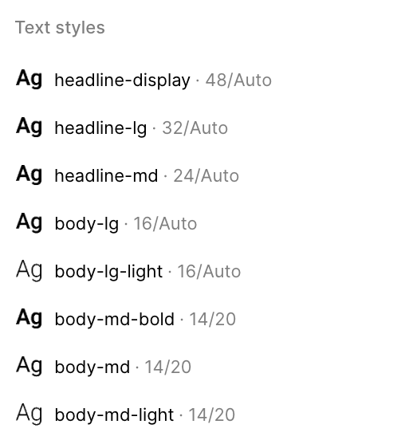
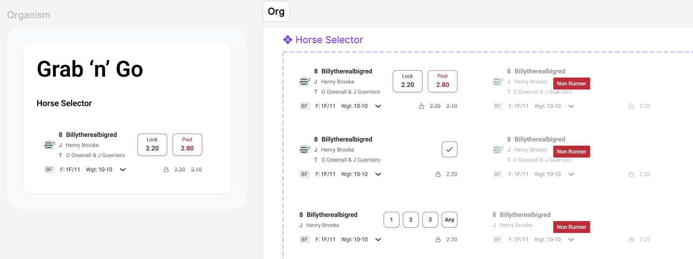

Tote Design System
Building an AI-compatible design system that is developer, stakeholder and designer friendly. Reducing a 537-component library to 142 sped up development and built consistency.

Before
After
Why I Created The Design System
Even being in a team of three, consistency can be challenging without guidelines and rules. Furthermore, if designers can’t find components in their systems, how can we assume developers and stakeholders can?
By consolidating components, building tokens, and collaborating with developers, the design system became a source of truth. This quickened development and decreased the gap between design and build as designers could directly contribute to the code.
Foundations
The existing brand guidelines were tricky to use for a designer. The primary red did not pass accessibility guidelines when used as a background for white text. Using too many colours can become distracting and confusing to customers.



Tokenisation
The tokens are four words that describe the context and how to use each component and colour on an interface. This creates consistency as it removes designers guessing how to use these components.

Working with developers to build the taxonomy meant that the design system was aligned with how the components were created in code. This facilitated AI agents to read and build the components within the guidelines set by the design system.
Outcomes
Unlocking AI
Introducing Tokenisation
Building the guidelines and naming conventions that AI can read and produce sped up development, but did not sacrifice consistency of quality as it created a frame that AI could work within rather than it filling in the blanks.
Source of Truth
All components are linked to the design system
Developers and stakeholders had one document where they could find components rather than trying to find them in outdated user flows.
